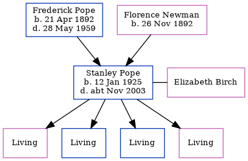

Stanley Gordon Pope 1925 - c2003
[ Home ] | [ Calendar ] | [ Surnames Index ] | [ Errors ] | [ Family History ]A learning scientific instrument maker and the youngest of 3 children of Frederick Pope (a fruiterer) and Florence Newman, Stanley Pope, the fourth cousin once-removed on the father's side of Nigel Horne, was born in Brentford, London, England on 12 Jan 19251,2,3 and. He married Elizabeth Birch (with whom he had 4 surviving children Elizabeth Susan, Leonard John, Keith Gordon and Wendy Anne) in Lambeth, London, England around Aug 19484. On 29 Sept 1939, he was living at 86 District Road, Sudbury, London1.
He died c. Nov 2003 in Torbay, Devon, England3 and was buried at St Gregory Churchyard, Dawlish, Devon after 1 Nov 20035.
Parents
- Frederick Ernest was born on 21 Apr 1892
- Florence Caroline was born on 26 Nov 1892
Citations
- 1939 Register - Findmypast (was the son of the head of the household)
- England & Wales births 1837-2006 - Findmypast
- England & Wales deaths 1837-2007 - Findmypast
- England & Wales Marriages 1837-2005 - Findmypast
- https://www.findagrave.com/memorial/132008100/stanley-gordon-pope
Media
1939 Register Image - TNA-R39-0946-0946I-016
England & Wales deaths 1837-2007 - BMD/D/2003/10/85675873
England & Wales marriages 1837-2005 - BMD/M/1948/3/PZ/000071/129
England & Wales births 1837-2006 - BMD/B/1925/1/AZ/001018/151
Family Tree
Map
Generated by ged2site. Last updated on Jul 3, 2024
Known Issues
Adding date of burial as 'aft abt Nov 2003'